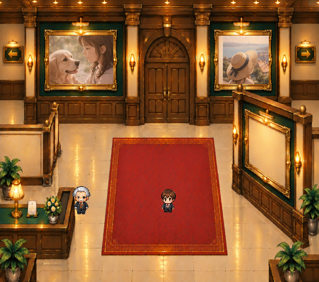

金縁の表示・非表示
正式キャラと実際の背景を合わせて検証しています。写真も既存の原本画像のままです。
2種類の表示比較


金縁あり
金縁ありでは、元画像と画素単位で一致します。金縁なしでは、絨毯本体の赤い布目を使って縁取り部分を補っています。
独立した素材

ゲーム本体への統合は未実施。ユーザーによる美術最終確認待ちの完成候補です。
絨毯の中央はそのまま、外周の金装飾だけを独立させました。
正式キャラと実際の背景を合わせて検証しています。写真も既存の原本画像のままです。

金縁あり金縁ありでは、元画像と画素単位で一致します。金縁なしでは、絨毯本体の赤い布目を使って縁取り部分を補っています。
ゲーム本体への統合は未実施。ユーザーによる美術最終確認待ちの完成候補です。